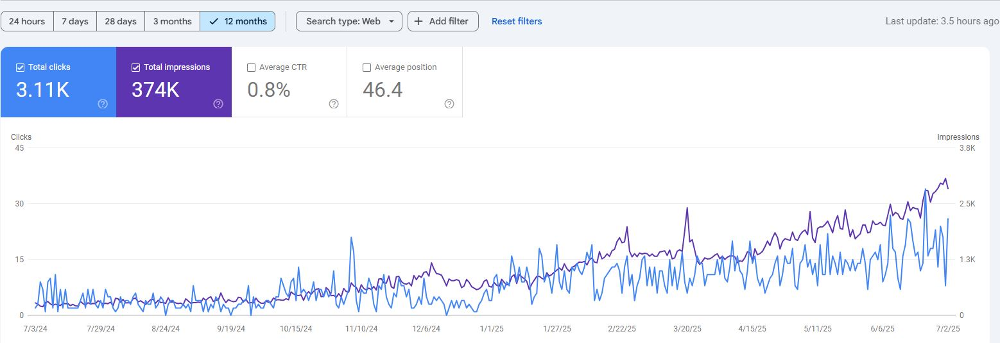
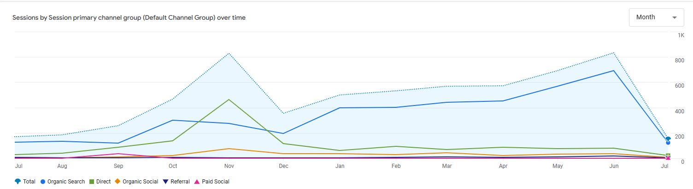
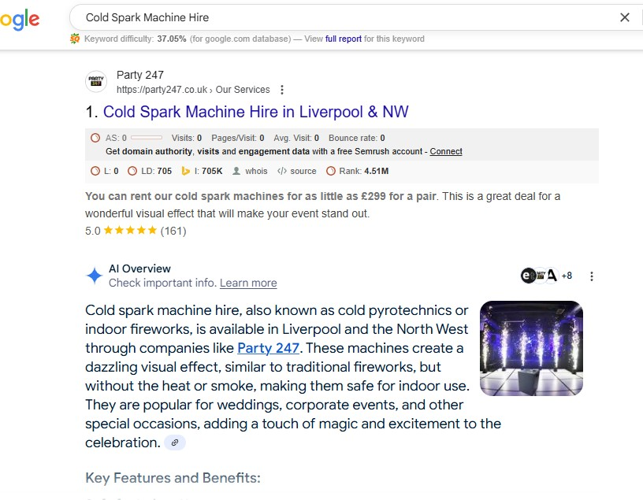
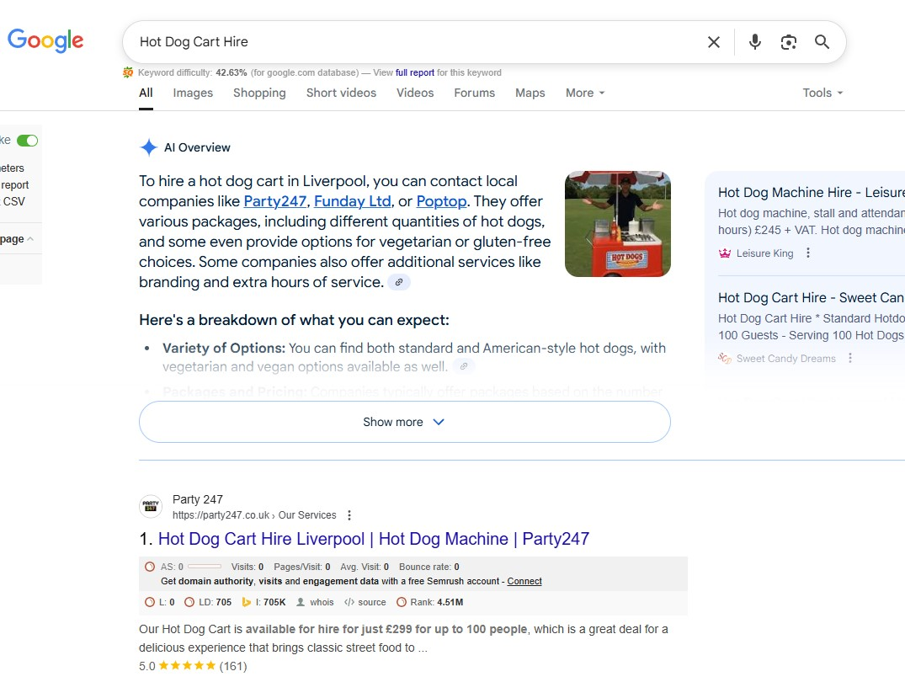
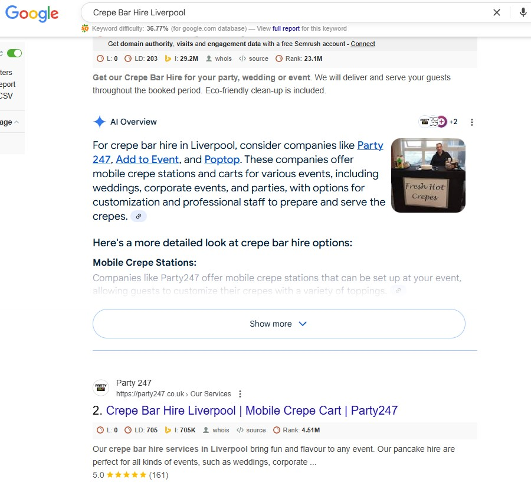
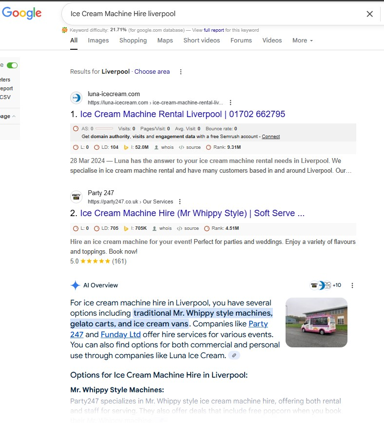
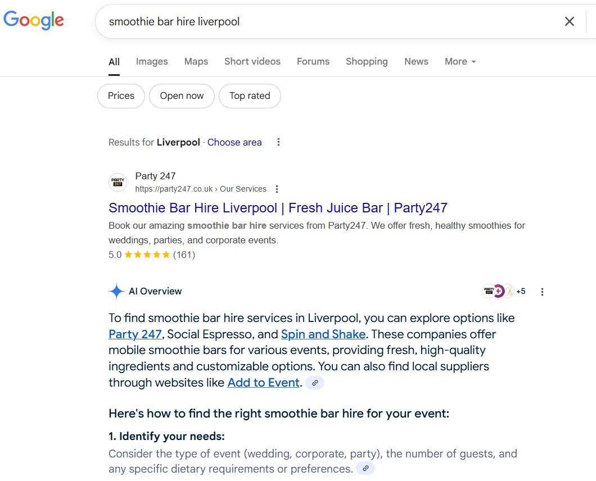

Local SEO, technical optimisation, service-page strategy and AI search visibility for a Liverpool-based party and event equipment hire business.
Client: Party247
Industry: Party & Event Equipment Hire
Party247 needed stronger organic visibility for commercially valuable party and event hire searches, particularly across Liverpool and surrounding areas.
The website required technical improvements, stronger service-page optimisation and a clearer structure to help search engines understand the different hire services available.
Local search visibility also needed improvement through Google Business Profile optimisation, location relevance and stronger supporting content.
Audited the website for technical issues affecting crawlability, indexation, metadata, internal linking, page structure and overall search performance.
Technical improvements were implemented alongside changes to website structure to create a stronger foundation for service and location-based pages.
Optimised key hire pages around relevant customer searches, improving headings, metadata, page copy, keyword targeting and internal linking.
The strategy focused on matching each service page closely with user intent for specific hire products and local searches.
Strengthened local search signals through Google Business Profile optimisation, consistent business information and local relevance across the website.
This supported stronger visibility for party and event hire searches around Liverpool.
Improved service-led content to provide clear information about individual hire options, customer use cases and local availability.
Pages were structured with clear headings and concise answers to improve both traditional search relevance and visibility across newer AI-led search experiences.
Supported the website with relevant backlinks and local citations to strengthen authority, business relevance and local search signals.
The campaign delivered sustained organic visibility and search traffic across the 12-month reporting period.
Across the 12-month reporting period, Google Search Console recorded approximately 374K impressions and 3.11K organic clicks.

Google Search Console performance showing organic clicks and impressions across the reporting period.
Google Analytics showed organic search contributing consistently to website sessions throughout the campaign period.

GA4 sessions by source and medium showing the contribution of organic search traffic.
Party247 also gained visibility within Google's AI-generated search experiences for a range of commercially relevant service searches.
The examples below show Party247 being surfaced or cited within Google AI Overviews alongside strong traditional organic visibility.
This demonstrates broader search visibility beyond standard blue-link rankings across service-led and local-intent queries.

Cold Spark Machine Hire

Hot Dog Cart Hire

Crepe Bar Hire Liverpool

Ice Cream Machine Hire Liverpool

Smoothie Bar Hire Liverpool